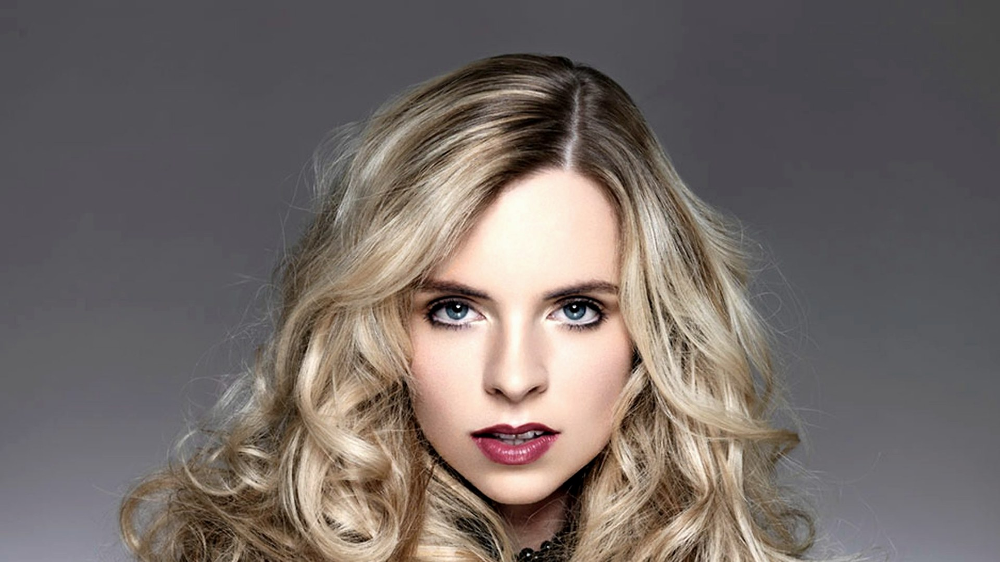

Coupes femme
Conseil morphocoiffure
Coupe coiffage, coupe créative. Conseil morphocoiffure adapté à votre visage et votre style de vie.

La coupe femme chez Prestige Coiffure commence toujours par un moment d'écoute. Avant de saisir les ciseaux, nous prenons le temps de comprendre votre morphologie, votre texture de cheveux, vos habitudes de coiffage et votre mode de vie — parce qu'une belle coupe, c'est d'abord une coupe que vous pouvez reproduire chez vous.
Que vous souhaitiez une coupe classique, structurée, un carré modernisé, une frange bien placée ou une coupe créative qui sort des sentiers battus, nous adaptons chaque geste à votre réalité. Les produits de finition sont issus de la gamme Davines, sélectionnés pour respecter le cheveu et prolonger la tenue.
Le conseil morphocoiffure
Toutes les formes de visage ne s'accommodent pas des mêmes longueurs ni des mêmes volumes. Notre approche morphocoiffure prend en compte la forme de votre visage, la densité et la texture de vos cheveux, mais aussi votre rapport au coiffage quotidien. L'objectif : une coupe qui soit belle le jour J et encore facile à porter trois semaines plus tard.
Diagnostic & morphocoiffure
Analyse de la texture et densité de vos cheveux. Échange sur vos habitudes de coiffage et vos envies. Conseils et propositions d'une coupe entièrement personnalisée.
Shampoing & soin personnalisé
Shampoing doux adapté à votre type de cheveux, avec un soin personnalisé Davines possible pour faciliter le travail de coupe et protéger la fibre.
Coupe à sec ou sur cheveux mouillés
Technique choisie selon la texture et le résultat souhaité. La coupe à sec permet de visualiser le rendu naturel ; la coupe mouillée offre une précision maximale.
Coiffage
Séchage et mise en forme : technique de coiffage adaptée — lisse, ondulé, volumineux — avec les produits de finition Davines.
Conseil entretien
Recommandations personnalisées sur les gestes et produits à adopter à la maison pour prolonger le rendu de la coupe entre deux rendez-vous.
Chaque coupe est pensée pour mettre en valeur votre visage et s'harmoniser avec votre texture de cheveux. Une solution sur-mesure.
Une bonne coupe se reproduit facilement. Nous concevons chaque coupe pour qu'elle soit belle naturellement, sans nécessiter une mise en forme complexe chaque matin.
Grâce au conseil technique inclus dans chaque rendez-vous, vous repartez avec les clés pour varier vos styles — lisses, ondulés, naturels — selon l'occasion.
En tant qu'ambassadeur officiel Davines, nous sélectionnons les produits les plus adaptés à votre profil capillaire pour prolonger l'effet de la coupe chez vous.
Propres de préférence — cela facilite le diagnostic et permet de travailler sur une fibre dans son état naturel. Si vous arrivez avec des produits coiffants, pas d'inquiétude, nous commencerons par un shampoing.
Toutes les 4 à 6 semaines pour les coupes courtes ou les coupes avec frange. Pour les coupes longues, un passage toutes les 8 à 12 semaines suffit généralement à conserver la forme et à éliminer les pointes abîmées.
La coupe classique vise une forme nette, polyvalente et facile à reproduire chez soi. La coupe créative implique un travail plus technique : déstructuration, effets de volume, coupes asymétriques ou dégradés féminins. Les deux incluent le diagnostic et le choix adapté à votre style de vie.
Prête pour votre nouvelle coupe ?
Disponible sur Planity, 7j/7. Conseil morphocoiffure inclus.
Réserver maintenant